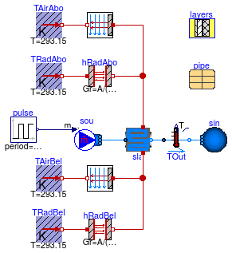

Collection of models that illustrate model use and test models
Information
This package contains examples for the use of models that can be found in
Buildings.Fluid.HeatExchangers.RadiantSlabs.
Extends from Modelica.Icons.ExamplesPackage (Icon for packages containing runnable examples).
Package Content
Model that tests the radiant slab with multiple parallel circuits and epsilon-NTU configuration

Information
This model is identical to
Buildings.Fluid.HeatExchangers.RadiantSlabs.Examples.SingleCircuitMultipleCircuit
except that the number of segments in the slab is set to 1
and the heat transfer between the fluid and the slab is computed using
an epsilon-NTU model.
Extends from Modelica.Icons.Example (Icon for runnable examples).
Parameters
| Type | Name | Default | Description |
|---|
| MassFlowRate | m_flow_nominal | 0.167 | Nominal mass flow rate for each circuit [kg/s] |
| Area | A | 10 | Heat transfer area for each circuit [m2] |
| Generic | layers | | Material layers from surface a to b (8cm concrete, 5 cm insulation, 20 cm reinforced concrete) |
| PEX_RADTEST | pipe | | Pipe material |
| Integer | nCir | 2 | Number of parallel circuits for slab 3 |
Modelica definition
model SingleCircuitMultipleCircuitEpsilonNTU
"Model that tests the radiant slab with multiple parallel circuits and epsilon-NTU configuration"
extends Modelica.Icons.Example;
package Medium =
Buildings.Media.Water;
Sources.Boundary_ph sin(
redeclare package Medium = Medium, nPorts=3,
p(displayUnit="Pa") = 300000)
"Sink";
Modelica.Blocks.Sources.Pulse pulse(
startTime=0,
amplitude=50*400,
offset=300000 - 50*200,
width=50,
period=86400/2);
Buildings.Fluid.HeatExchangers.RadiantSlabs.SingleCircuitSlab sla1(
m_flow_nominal=m_flow_nominal,
redeclare package Medium = Medium,
layers=layers,
iLayPip=1,
pipe=pipe,
sysTyp=Buildings.Fluid.HeatExchangers.RadiantSlabs.Types.SystemType.Floor,
disPip=0.2,
A=A,
energyDynamics=Modelica.Fluid.Types.Dynamics.FixedInitial,
from_dp=true)
"Slabe with embedded pipes";
parameter Modelica.SIunits.MassFlowRate m_flow_nominal=
0.167
"Nominal mass flow rate for each circuit";
Modelica.Thermal.HeatTransfer.Sources.FixedTemperature TAbo(T=293.15)
"Air temperature above the slab";
Modelica.Thermal.HeatTransfer.Sources.FixedTemperature TBel(T=293.15)
"Radiant temperature below the slab";
Modelica.Thermal.HeatTransfer.Components.ThermalConductor conAbo1(G=20*A)
"Combined convection and radiation resistance above the slab";
parameter Modelica.SIunits.Area A=10
"Heat transfer area for each circuit";
Modelica.Thermal.HeatTransfer.Components.ThermalConductor conBel1(G=20*A)
"Combined convection and radiation resistance below the slab";
parameter HeatTransfer.Data.OpaqueConstructions.Generic layers(nLay=3, material={
Buildings.HeatTransfer.Data.Solids.Generic(
x=0.08,
k=1.13,
c=1000,
d=1400,
nSta=5),
Buildings.HeatTransfer.Data.Solids.Generic(
x=0.05,
k=0.04,
c=1400,
d=10),
Buildings.HeatTransfer.Data.Solids.Generic(
x=0.2,
k=1.8,
c=1100,
d=2400)})
"Material layers from surface a to b (8cm concrete, 5 cm insulation, 20 cm reinforced concrete)";
parameter Data.Pipes.PEX_RADTEST pipe
"Pipe material";
Modelica.Thermal.HeatTransfer.Components.ThermalConductor conAbo2(G=20*A)
"Combined convection and radiation resistance above the slab";
Buildings.Fluid.HeatExchangers.RadiantSlabs.SingleCircuitSlab sla2(
m_flow_nominal=m_flow_nominal,
redeclare package Medium = Medium,
layers=layers,
iLayPip=1,
pipe=pipe,
sysTyp=Buildings.Fluid.HeatExchangers.RadiantSlabs.Types.SystemType.Floor,
disPip=0.2,
A=A,
energyDynamics=Modelica.Fluid.Types.Dynamics.FixedInitial,
from_dp=true)
"Slabe with embedded pipes";
Modelica.Thermal.HeatTransfer.Components.ThermalConductor conBel2(G=20*A)
"Combined convection and radiation resistance below the slab";
Modelica.Thermal.HeatTransfer.Components.ThermalConductor conBel3(G=nCir*20*A)
"Combined convection and radiation resistance below the slab";
ParallelCircuitsSlab sla3(
redeclare package Medium = Medium,
layers=layers,
iLayPip=1,
pipe=pipe,
sysTyp=Buildings.Fluid.HeatExchangers.RadiantSlabs.Types.SystemType.Floor,
disPip=0.2,
nCir=nCir,
A=nCir*A,
m_flow_nominal=nCir*m_flow_nominal,
energyDynamics=Modelica.Fluid.Types.Dynamics.FixedInitial,
from_dp=true)
"Slabe with embedded pipes";
Modelica.Thermal.HeatTransfer.Components.ThermalConductor conAbo3(G=nCir*20*A)
"Combined convection and radiation resistance above the slab";
Sensors.TemperatureTwoPort senTem1(
redeclare package Medium = Medium,
m_flow_nominal=m_flow_nominal/2)
"Temperature sensor";
Sensors.TemperatureTwoPort senTem2(
redeclare package Medium = Medium,
m_flow_nominal=m_flow_nominal/2)
"Temperature sensor";
Sensors.TemperatureTwoPort senTem3(
redeclare package Medium = Medium,
m_flow_nominal=nCir*m_flow_nominal)
"Temperature sensor";
Sources.Boundary_pT sou(
redeclare package Medium = Medium,
nPorts=3,
use_p_in=true,
T=313.15)
"Source";
parameter Integer nCir=2
"Number of parallel circuits for slab 3";
equation
connect(TBel.port, conBel1.port_a);
connect(conBel1.port_b, sla1.surf_b);
connect(sla1.surf_a, conAbo1.port_a);
connect(TAbo.port, conAbo1.port_b);
connect(TAbo.port, conAbo2.port_b);
connect(conAbo2.port_a, sla2.surf_a);
connect(TBel.port, conBel2.port_a);
connect(TBel.port, conBel3.port_a);
connect(TAbo.port, conAbo3.port_b);
connect(conAbo3.port_a, sla3.surf_a);
connect(conBel3.port_b, sla3.surf_b);
connect(sla1.port_b, senTem1.port_a);
connect(sla2.port_b, senTem2.port_a);
connect(sla3.port_b, senTem3.port_a);
connect(senTem1.port_b, sin.ports[1]);
connect(senTem2.port_b, sin.ports[2]);
connect(senTem3.port_b, sin.ports[3]);
connect(conBel2.port_b, sla2.surf_b);
connect(pulse.y, sou.p_in);
connect(sou.ports[1], sla1.port_a);
connect(sou.ports[2], sla2.port_a);
connect(sou.ports[3], sla3.port_a);
end SingleCircuitMultipleCircuitEpsilonNTU;
Model that tests the radiant slab with multiple parallel circuits
Information
This example compares the results of two models of a single circuit that are arranged in
parallel, versus a model that directly implements two parallel circuits.
Both configurations have the same mass flow rate and temperatures.
For simplicity, a combined convective and radiative resistance
which is independent of the temperature difference has been used.
The model is exposed to a step change in pressure, which causes forward and reverse
flow.
Extends from Buildings.Fluid.HeatExchangers.RadiantSlabs.Examples.SingleCircuitMultipleCircuitEpsilonNTU (Model that tests the radiant slab with multiple parallel circuits and epsilon-NTU configuration).
Parameters
| Type | Name | Default | Description |
|---|
| MassFlowRate | m_flow_nominal | 0.167 | Nominal mass flow rate for each circuit [kg/s] |
| Area | A | 10 | Heat transfer area for each circuit [m2] |
| Generic | layers | | Material layers from surface a to b (8cm concrete, 5 cm insulation, 20 cm reinforced concrete) |
| PEX_RADTEST | pipe | | Pipe material |
| Integer | nCir | 2 | Number of parallel circuits for slab 3 |
Modelica definition
model SingleCircuitMultipleCircuitFiniteDifference
"Model that tests the radiant slab with multiple parallel circuits"
extends Buildings.Fluid.HeatExchangers.RadiantSlabs.Examples.SingleCircuitMultipleCircuitEpsilonNTU
(
sla1(heatTransfer=Buildings.Fluid.HeatExchangers.RadiantSlabs.Types.HeatTransfer.FiniteDifference),
sla2(heatTransfer=Buildings.Fluid.HeatExchangers.RadiantSlabs.Types.HeatTransfer.FiniteDifference),
sla3(heatTransfer=Buildings.Fluid.HeatExchangers.RadiantSlabs.Types.HeatTransfer.FiniteDifference));
end SingleCircuitMultipleCircuitFiniteDifference;
Model that tests the radiant slab with epsilon-NTU configuration

Information
This model is identical to
Buildings.Fluid.HeatExchangers.RadiantSlabs.Examples.StepResponse
except that the number of segments in the slab is set to 1
and the heat transfer between the fluid and the slab is computed using
an epsilon-NTU model.
Extends from Modelica.Icons.Example (Icon for runnable examples).
Parameters
| Type | Name | Default | Description |
|---|
| MassFlowRate | m_flow_nominal | 0.167 | Nominal mass flow rate [kg/s] |
| Area | A | 10 | Heat transfer area [m2] |
| Generic | layers | | Material layers from surface a to b (8cm concrete, 5 cm insulation, 20 cm reinforced concrete) |
| PEX_RADTEST | pipe | | Pipe material |
Modelica definition
model StepResponseEpsilonNTU
"Model that tests the radiant slab with epsilon-NTU configuration"
extends Modelica.Icons.Example;
package Medium =
Buildings.Media.Water;
Sources.Boundary_ph sin(
redeclare package Medium = Medium, nPorts=1)
"Sink";
Sources.MassFlowSource_T sou(
redeclare package Medium = Medium,
use_m_flow_in=true,
T=298.15,
nPorts=1)
"Source";
Modelica.Blocks.Sources.Pulse pulse(
period=86400,
startTime=0,
amplitude=-m_flow_nominal,
offset=m_flow_nominal);
Buildings.Fluid.HeatExchangers.RadiantSlabs.SingleCircuitSlab
sla(
m_flow_nominal=m_flow_nominal,
redeclare package Medium = Medium,
layers=layers,
iLayPip=1,
pipe=pipe,
sysTyp=Buildings.Fluid.HeatExchangers.RadiantSlabs.Types.SystemType.Floor,
disPip=0.2,
A=A,
energyDynamics=Modelica.Fluid.Types.Dynamics.FixedInitial,
heatTransfer=Buildings.Fluid.HeatExchangers.RadiantSlabs.Types.HeatTransfer.FiniteDifference)
"Slabe with embedded pipes";
parameter Modelica.SIunits.MassFlowRate m_flow_nominal=
0.167
"Nominal mass flow rate";
Modelica.Thermal.HeatTransfer.Sources.FixedTemperature TAirAbo(T=293.15)
"Air temperature above the slab";
Modelica.Thermal.HeatTransfer.Sources.FixedTemperature TRadAbo(T=293.15)
"Radiant temperature above the slab";
Modelica.Thermal.HeatTransfer.Sources.FixedTemperature TAirBel(T=293.15)
"Air temperature below the slab";
Modelica.Thermal.HeatTransfer.Sources.FixedTemperature TRadBel(T=293.15)
"Radiant temperature below the slab";
HeatTransfer.Convection.Interior conAbo(
A=A,
conMod=Buildings.HeatTransfer.Types.InteriorConvection.Temperature,
til=Buildings.Types.Tilt.Floor)
"Convective heat transfer above the slab";
parameter Modelica.SIunits.Area A=10
"Heat transfer area";
HeatTransfer.Convection.Interior conBel(
A=A,
conMod=Buildings.HeatTransfer.Types.InteriorConvection.Temperature,
til=Buildings.Types.Tilt.Ceiling)
"Convective heat transfer below the slab";
Modelica.Thermal.HeatTransfer.Components.BodyRadiation hRadAbo(Gr=A/(1/0.7 + 1
/0.7 - 1))
"Radiative heat transfer above the slab";
Modelica.Thermal.HeatTransfer.Components.BodyRadiation hRadBel(Gr=A/(1/0.7 + 1
/0.7 - 1))
"Radiative heat transfer below the slab";
parameter HeatTransfer.Data.OpaqueConstructions.Generic layers(nLay=3, material={
Buildings.HeatTransfer.Data.Solids.Generic(
x=0.08,
k=1.13,
c=1000,
d=1400,
nSta=5),
Buildings.HeatTransfer.Data.Solids.Generic(
x=0.05,
k=0.04,
c=1400,
d=10),
Buildings.HeatTransfer.Data.Solids.Generic(
x=0.2,
k=1.8,
c=1100,
d=2400)})
"Material layers from surface a to b (8cm concrete, 5 cm insulation, 20 cm reinforced concrete)";
parameter Data.Pipes.PEX_RADTEST pipe
"Pipe material";
Sensors.TemperatureTwoPort TOut(
redeclare package Medium = Medium,
m_flow_nominal=m_flow_nominal)
"Outlet temperature of the slab";
equation
connect(pulse.y, sou.m_flow_in);
connect(sou.ports[1], sla.port_a);
connect(TAirAbo.port, conAbo.fluid);
connect(TRadAbo.port, hRadAbo.port_a);
connect(TAirBel.port, conBel.fluid);
connect(TRadBel.port, hRadBel.port_a);
connect(conAbo.solid, sla.surf_a);
connect(hRadAbo.port_b, sla.surf_a);
connect(conBel.solid, sla.surf_b);
connect(hRadBel.port_b, sla.surf_b);
connect(sla.port_b, TOut.port_a);
connect(TOut.port_b, sin.ports[1]);
end StepResponseEpsilonNTU;
Model that tests the radiant slab
Information
This example models the step response of a radiant slab.
Extends from Buildings.Fluid.HeatExchangers.RadiantSlabs.Examples.StepResponseEpsilonNTU (Model that tests the radiant slab with epsilon-NTU configuration).
Parameters
| Type | Name | Default | Description |
|---|
| MassFlowRate | m_flow_nominal | 0.167 | Nominal mass flow rate [kg/s] |
| Area | A | 10 | Heat transfer area [m2] |
| Generic | layers | | Material layers from surface a to b (8cm concrete, 5 cm insulation, 20 cm reinforced concrete) |
| PEX_RADTEST | pipe | | Pipe material |
Modelica definition
Automatically generated Mon Jul 13 14:25:19 2015.
 Buildings.Fluid.HeatExchangers.RadiantSlabs.Examples.SingleCircuitMultipleCircuitEpsilonNTU
Buildings.Fluid.HeatExchangers.RadiantSlabs.Examples.SingleCircuitMultipleCircuitEpsilonNTU